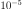
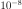
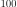
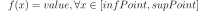
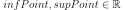
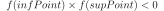
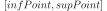
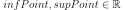
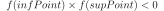
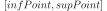

Solver¶
- class Solver(*args)¶
SolverImplementation of 1D non linear equations.
- Available constructor:
SolverImplementation()
SolverImplementation(solverImplementation)
SolverImplementation(absError, relError, resError, maximumFunctionEvaluation)
- Parameters
- solverImplementationSolverImplementationImplementation
The implementation of a particular solver which is
Bisection,BrentorSecant.- absErrorpositive float
Absolute error: distance between two successive iterates at the end point. Default is .
- relErrorpositive float
Relative error: distance between the two last successive iterates with regards to the last iterate. Default is .
- resErrorpositive float
Residual error: difference between the last iterate value and the expected value. Default is .
- maximumFunctionEvaluationint
The maximum number of evaluations of the function. Default is .
Notes
This class enables to solve 1D non linear equations :

if
 is a continuous function from
is a continuous function from  to ,
 and if is such that
, then has at least a zero
in the interval . In particular, it is used in the
root research of a
to ,
 and if is such that
, then has at least a zero
in the interval . In particular, it is used in the
root research of a
Directional Sampling simulation.Methods
Accessor to the absolute error.
Accessor to the object's name.
getId()Accessor to the object's id.
Accessor to the underlying implementation.
Accessor to the maximum number of evaluations of the function.
getName()Accessor to the object's name.
Accessor to the relative error.
Accessor to the residual error.
Accessor to the number of evaluations of the function.
setAbsoluteError(absoluteError)Accessor to the absolute error.
Accessor to the maximum number of evaluations of the function.
setName(name)Accessor to the object's name.
setRelativeError(relativeError)Accessor to the relative error.
setResidualError(residualError)Accessor to the residual error.
solve
- __init__(*args)¶
- getAbsoluteError()¶
Accessor to the absolute error.
- Returns
- absErrorfloat
The absolute error: distance between two successive iterates at the end point.
- getClassName()¶
Accessor to the object’s name.
- Returns
- class_namestr
The object class name (object.__class__.__name__).
- getId()¶
Accessor to the object’s id.
- Returns
- idint
Internal unique identifier.
- getImplementation()¶
Accessor to the underlying implementation.
- Returns
- implImplementation
The implementation class.
- getMaximumFunctionEvaluation()¶
Accessor to the maximum number of evaluations of the function.
- Returns
- maxEvalint
The maximum number of evaluations of the function.
- getName()¶
Accessor to the object’s name.
- Returns
- namestr
The name of the object.
- getRelativeError()¶
Accessor to the relative error.
- Returns
- relErrorfloat
The relative error: distance between the two last successive iterates with regards to the last iterate.
- getResidualError()¶
Accessor to the residual error.
- Returns
- resErrorfloat
The residual errors: difference between the last iterate value and the expected value.
- getUsedFunctionEvaluation()¶
Accessor to the number of evaluations of the function.
- Returns
- nEvalint
The number of evaluations of the function.
- setAbsoluteError(absoluteError)¶
Accessor to the absolute error.
- Parameters
- absErrorfloat
The absolute error: distance between two successive iterates at the end point.
- setMaximumFunctionEvaluation(maximumFunctionEvaluation)¶
Accessor to the maximum number of evaluations of the function.
- Parameters
- maxEvalint
The maximum number of evaluations of the function.
- setName(name)¶
Accessor to the object’s name.
- Parameters
- namestr
The name of the object.
- setRelativeError(relativeError)¶
Accessor to the relative error.
- Parameters
- relErrorfloat
The relative error: distance between the two last successive iterates with regards to the last iterate.
- setResidualError(residualError)¶
Accessor to the residual error.
- Parameters
- resErrorfloat
The residual errors: difference between the last iterate value and the expected value.